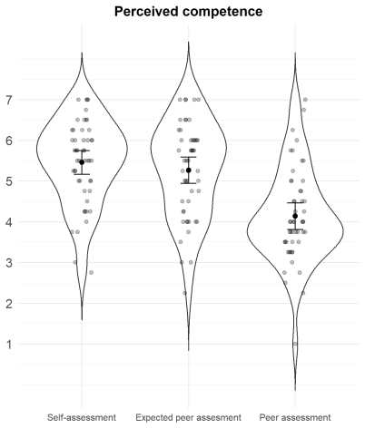
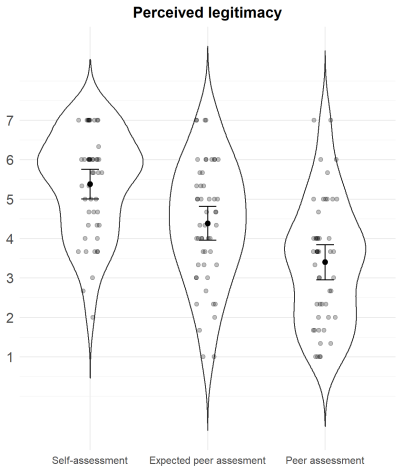
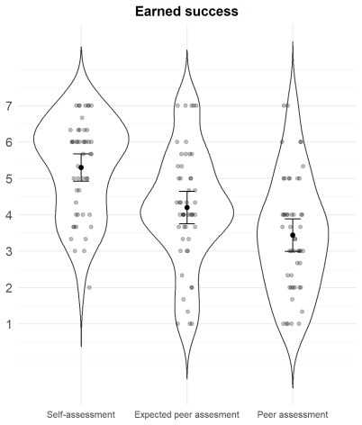
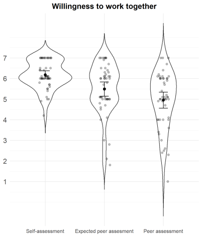
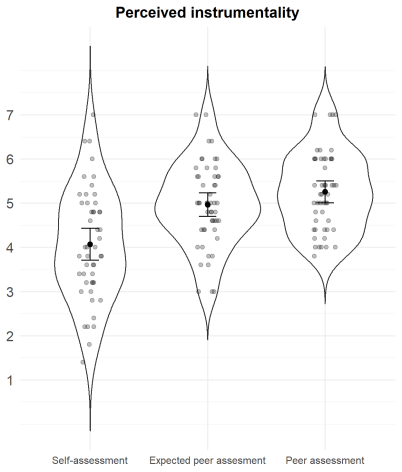

Sponsorship, third-party advocacy that places a candidate into an opportunity, can be a socially ambiguous signal in the workplace. We propose a self-other miscalibration that is, sponsees (as compared to observers) would perceive themselves to have higher competence, earned success, legitimacy, and lower instrumentality in their relationships. In a scenario-based experimental study, participants evaluated a sponsored analyst from three assessment perspectives: self-assessment (participants as sponsees evaluated themselves), expected peer assessment (participants thought about how others would evaluate them as being sponsees), or peer assessment (participants evaluating their sponsored peers). Participants in both self-assessment and expected peer assessment perspectives tended to report higher perceptions of competence, earned success, and legitimacy, but lower perceptions of instrumentality in relationships as compared to those in the peer assessment perspective, supporting the proposed self–other miscalibration. Next, we plan to investigate the roles of observer rank (peer vs. superior) and visible homophily in influencing these perceptions.
Extended Abstract
Sponsorship is third-party advocacy that places a candidate into a concrete opportunity and puts the sponsor’s reputation at stake, which has been shown to be a central career mechanism for advancement (Hewlett et al., 2011; Kram, 1985). Sponsorship draws on social capital, the resources embedded in social networks that provide access to information, influence, and opportunities (Kilduff & Tsai, 2003). Prior research generally frames sponsorship as a key career function that positively shapes career trajectories and outcomes (Allen et al., 2004; Campbell & Shea, 2025; Kram, 1983; Ragins & Cotton, 1999). Yet, sponsorship is a socially ambiguous signal; it can convey relational value (e.g., network utility, political cover, and reach) while simultaneously raising questions about the legitimacy and competency of sponsored candidates and questioning the transactional nature of their relationships. Observers might interpret this ambiguous signal through the lens of uncertainty (Connelly et al., 2011; Spence, 1973), relying more heavily on the signal itself and related heuristics when forming judgments. Building on this view, the present research examines how sponsorship is perceived by observers in the organizations, and how those perceptions may diverge systematically from sponsees’ own predictions.
Self–other miscalibration follows from systematic differences in vantage point and incentives. People rely more on their own intentions and efforts to judge themselves while detecting bias when judging others’ outcomes (Pronin, Gilovich, & Ross, 2004) and selectively interpret ambiguous information in a self-serving way (Kunda, 1990). We propose that sponsees possess private knowledge of their effort and therefore interpret sponsorship as earned recognition; they overestimate its relational value while underestimating competence discounts and legitimacy concerns. Observers, by contrast, lack access to that private knowledge and rely heavily on visible cues, and make stronger dispositional inferences and discount alternative situational explanations (Gilbert & Malone, 1995), inferring some relational value but also discounting competence and questioning legitimacy and instrumental nature in their relationships.
To test this, we examined the self–other miscalibration in an experimental study. Specifically, the study tested whether individuals who are sponsored systematically mispredict how peers will evaluate them after being sponsored into a desirable position in the hierarchy. Participants (N = 150; 37.3% females, 62.0% males, 0.7% other; Mage = 43.75, SDage = 11.36) were randomly assigned to one of three perspective conditions: self-assessment (how sponsored individuals evaluate themselves), expected peer assessment (how sponsored individuals think others will evaluate them), and peer assessment (how observers evaluate a sponsored colleague). Participants were asked to imagine themselves as junior analysts in an investment banking firm, where advancement depends heavily on gaining access to high-profile client accounts. In the scenario, a junior analyst (the participants themselves in the self- and expected peer assessment conditions or a colleague in the peer assessment condition) secured a desirable position because their manager sponsored them by recommending them to the account supervisor. After that, they were asked to evaluate the sponsorship from the perspective assigned, and to complete the measures about perceived competence (α = .92; Fiske et al., 2002), legitimacy (α = .97; Pavey et al., 2022), and earned success (α = .98; Boeckmann & Feather, 2007) using a 1-7 likert scale (1 = Not at all; 7 = A great deal). They also reported the perceived instrumentality of the focal individual’s building relationships (α = .88; Hur et al., 2021) from 1 = Strongly disagree to 7 = Strongly agree, and willingness to work together from 1 = Extremely unlikely to 7 = Extremely likely.
One-way ANOVAs were conducted to examine the effect of assessment perspective (self-assessment, expected peer assessment, and peer assessment) on perceived competence, perceived legitimacy, earned success, perceived instrumentality, and willingness to work together. Table 1 shows descriptive statistics and Figure 1 shows the distributions of the variables across the three assessment perspectives.
Table 1. Descriptive statistics (Mean (SD)) by assessment perspective.
| Variable | Self-assessment | Expected peer assessment | Peer assessment |
|---|---|---|---|
| Perceived competence | 5.46 (1.02) | 5.27 (1.16) | 4.14 (1.15) |
| Perceived legitimacy | 5.38 (1.30) | 4.39 (1.53) | 3.40 (1.57) |
| Earned success | 5.30 (1.31) | 4.20 (1.59) | 3.44 (1.57) |
| Perceived instrumentality | 4.07 (1.26) | 4.97 (0.94) | 5.26 (0.88) |
| Willingness to work together | 6.18 (0.68) | 5.49 (1.23) | 4.96 (1.37) |
Note: Post-Hoc (Tukey HSD) tests indicated that all pairwise contrasts across assessment conditions were significant (p < .05) except for perceived competence between self-assessment and expected peer assessment (p = .672) and for perceived instrumentality between expected peer assessment and peer assessment (p = .346).
Figure 1. Distributions of sponsorship evaluations across the assessment perspective.





The results show that sponsorship is perceived differently depending on the perspective condition. When participants as sponsees were evaluating themselves or thinking about how others would evaluate themselves, they tended to report higher perceptions of competence, legitimacy, and earned success and lower perceptions of instrumentality as compared to when they were evaluating their peers. This provided evidence of the self–other miscalibration.
As a next step, we plan to conduct an experimental study examining whether the observer rank (peer vs. superior) moderates the relationship between the perspective conditions and the different outcomes. This will be followed by another scenario-based experimental study examining the effect of the sponsor–sponsee matching. We will examine whether visible homophily (i.e., the sponsor and sponsee are of the same gender, race, or nationality) affects the perceptions of sponsorship. With this research, we aim to contribute to the literature on sponsorship by highlighting how sponsorship is interpreted by organizational audiences, how self–other miscalibration in these interpretations shapes perceptions of merit, legitimacy, and willingness to collaborate.
References
- Allen, T. D., Eby, L. T., Poteet, M. L., Lentz, E., & Lima, L. (2004). Career benefits associated with mentoring for proteges: A meta-analysis. Journal of Applied Psychology, 89(1), 127–136. https://doi.org/10.1037/0021-9010.89.1.127
- Boeckmann, R. J., & Feather, N. T. (2007). Gender, discrimination beliefs, group-based guilt, and response to affirmative action for Australian women. Psychology of Women Quarterly, 31(3), 290–304. https://doi.org/10.1111/j.1471-6402.2007.00372.x
- Campbell, E. L., & Shea, C. T. (2025). The gendered complexity of sponsorship: How male and female sponsors’ goals shape their social network strategies. Academy of Management Journal, 68(5), 1055–1083. https://doi.org/10.5465/amj.2023.1110
- Connelly, B. L., Certo, S. T., Ireland, R. D., & Reutzel, C. R. (2011). Signaling theory: A review and assessment. Journal of Management, 37(1), 39–67. https://doi.org/10.1177/0149206310388419
- Fiske, S. T., Cuddy, A. J. C., Glick, P., & Xu, J. (2002). A model of (often mixed) stereotype content: Competence and warmth respectively follow from perceived status and competition. Journal of Personality and Social Psychology, 82(6), 878–902. https://doi.org/10.1037/0022-3514.82.6.878
- Gilbert, D. T., & Malone, P. S. (1995). The correspondence bias. Psychological Bulletin, 117(1), 21–38. https://doi.org/10.1037/0033-2909.117.1.21
- Hewlett, S. A., Marshall, M., & Sherbin, L. (2011). The relationship you need to get right. Harvard Business Review, 89(10), 131–134.
- Hur, J. D., Lee-Yoon, A., & Whillans, A. V. (2021). Are they useful? The effects of performance incentives on the prioritization of work versus personal ties. Organizational Behavior and Human Decision Processes, 165, 103–114. https://doi.org/10.1016/j.obhdp.2021.04.010
- Kilduff, M., & Tsai, W. (2003). Social networks and organizations. Sage.
- Kram, K. E. (1983). Phases of the mentor relationship. Academy of Management Journal, 26(4), 608–625. https://doi.org/10.5465/255910
- Kram, K. E. (1985). Mentoring at work: Developmental relationships in organizational life. Scott, Foresman.
- Kunda, Z. (1990). The case for motivated reasoning. Psychological Bulletin, 108(3), 480–498. https://doi.org/10.1037/0033-2909.108.3.480
- Pavey, L., Churchill, S., & Sparks, P. (2022). Proscriptive injunctions can elicit greater reactance and lower legitimacy perceptions than prescriptive injunctions. Personality and Social Psychology Bulletin, 48(5), 676–689. https://doi.org/10.1177/01461672211021310
- Pronin, E., Gilovich, T., & Ross, L. (2004). Objectivity in the eye of the beholder: Divergent perceptions of bias in self versus others. Psychological Review, 111(3), 781–799. https://doi.org/10.1037/0033-295X.111.3.781
- Ragins, B. R., & Cotton, J. L. (1999). Mentor functions and outcomes: A comparison of men and women in formal and informal mentoring relationships. Journal of Applied Psychology, 84(4), 529–550. https://doi.org/10.1037/0021-9010.84.4.529
- Spence, M. (1973). Job market signaling. The Quarterly Journal of Economics, 87(3), 355–374. https://doi.org/10.2307/1882010